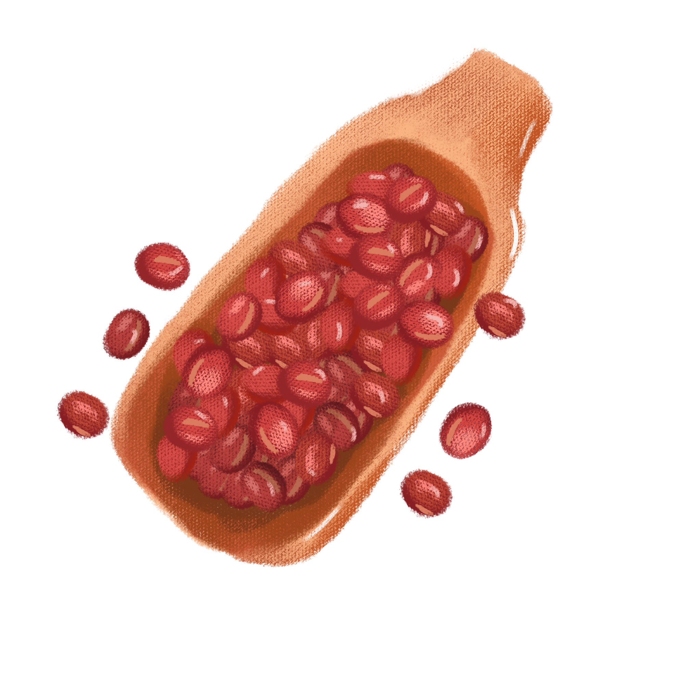

Red Bean Filling Recipe 
- 1lb dried red bean
- 3 1/2 C water
- 1 C vegetable oil
- 190g rock sugar
- 5g orange peel
- Rinse the adzuki beans, drain them, and add to your Instant Pot along with 3½ cups of water and 5 grams of dried orange peel, if using. Close the lid and set your Instant Pot on the Bean/Chili setting for 25 minutes. Once the cooking time has elapsed, leave it untouched for another 10 minutes. Remember, before you open the lid, carefully release the vent to let out the steam, and protect your hand with an oven mitt.
- Carefully transfer the cooked beans and liquid to a food processor to puree. If you have a smaller food processor, puree it in multiple batches as needed.
- In a thick-bottomed pan or nonstick pan, heat ¼ cup oil over medium heat. Add the adzuki bean puree and the sugar. Cook down until you have a thick paste. This process takes about 30-40 minutes, and you should only use medium/medium low heat. Remember to stir from the bottom every couple of minutes to prevent sticking and/or burning.
- During the cooking process, you can adjust the sugar to taste, and add the remaining oil in three portions every 10 minutes, ensuring the oil is well absorbed before adding more. The filling is done once it can hold its shape and a rubber spatula comes out clean.
- Let the filling cool until it’s only warm to the touch. If you pre-make the filling, store it in a clean, air-tight container after it has cooled completely. The shelf life in the refrigerator should be at least a week.